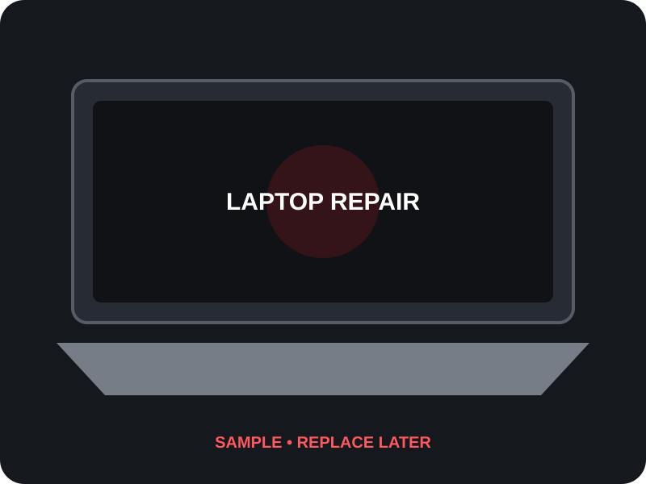
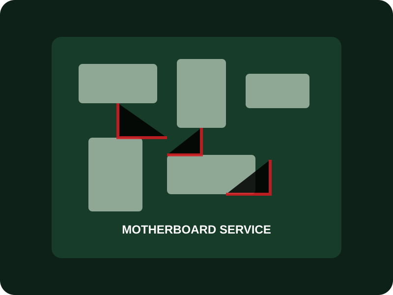
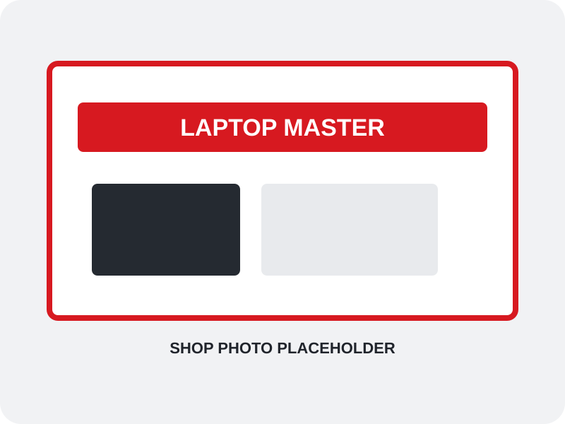

Laptop Repair
No power, no display, charging issues, overheating and general laptop problems.
LAPTOP & COMPUTER SERVICE CENTER • SHOLINGANALLUR
Reliable laptop repair, motherboard service, chip-level diagnosis, SSD & RAM upgrades, screen replacement and more.

WHAT WE DO
Professional service for common laptop hardware, motherboard, upgrade and software requirements.
No power, no display, charging issues, overheating and general laptop problems.
Board-level diagnosis and repair for power, charging and other motherboard faults.
Component-level troubleshooting for suitable laptop motherboard faults.
Upgrade storage and memory to improve boot time, responsiveness and capacity.
Laptop display replacement for cracked, damaged or faulty screens.
Battery diagnosis and replacement for laptops with poor or no battery backup.
Keyboard, hinge and related laptop body component replacement.
Data backup, recovery assistance, Windows installation and software setup.
WHY LAPTOP MASTER
We focus on diagnosing the actual problem before recommending a repair or replacement.
Understand the fault before proceeding with service.
Choose a suitable repair or upgrade based on the device and requirement.
Conveniently located in Sholinganallur, Chennai 600119.
Call or WhatsApp for service enquiries and updates.
OUR WORK
These are sample placeholders for now. Replace them later with your real shop and repair photos.



CUSTOMER EXPERIENCE
We will add selected real customer reviews and your Google review link here after the first version is live.
CONTACT LAPTOP MASTER
Call or WhatsApp us, or visit our service center in Sholinganallur.
No 17 Annai Indhira Gandhi Street,
Sholinganallur, Chennai 600119